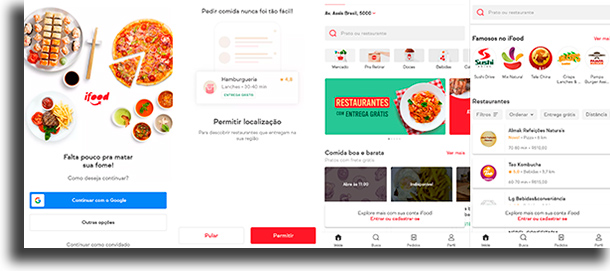

A Comunicação do iFood: Estratégias e Impacto
A comunicação empresarial do iFood é projetada para refletir sua essência inovadora, acessível e próxima ao público. Com uma abordagem direta e amigável, o iFood mantém uma presença forte e ativa em redes sociais, campanhas de marketing digital e canais de atendimento. O tom de voz descontraído, acolhedor e humano ajuda a estabelecer uma conexão próxima com os clientes, promovendo confiança e lealdade. Além do foco no atendimento ao cliente, o iFood também se comunica de forma clara e eficiente com seus parceiros comerciais e entregadores. A empresa usa uma combinação de e-mails, aplicativos e redes sociais para engajar e informar esses públicos, promovendo uma comunicação transparente e colaborativa. O iFood também investe em campanhas de conscientização sobre temas sociais e ambientais, alinhando suas ações de comunicação com os valores da empresa. Esse compromisso com a responsabilidade social se reflete em iniciativas como o programa iFood Regenera, que visa reduzir o impacto ambiental por meio da diminuição de resíduos plásticos e da compensação de carbono. Com uma estratégia de comunicação empresarial bem definida, o iFood não apenas fortalece sua marca, mas contribui para uma sociedade mais conectada, informada e consciente.
